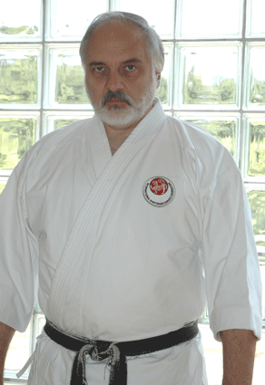
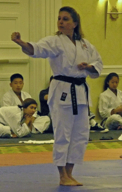
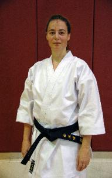
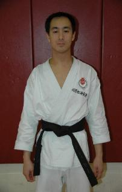

Instructors
Steven W. Majors was born and raised in Trenton, NJ. He
began his Shotokan training in 1985 with John Harders. In
addition to Shotokan, Mr. Majors holds a brown belt in Judo
and has also trained in Mo Duk Kwon, Tae Kwon Do, and Tai
Chi Chuan. In August, 1994, he began his studies in the
International Shotokan Karate Federation (ISKF). Mr. Majors
has completed the ISKF Instructor Training Program and is a
certified instructor, examiner and judge. He continues to train
periodically with Master Okazaki in Philadelphia. Currently, he
is teaching Shotokan in two Fairfax County community
recreation centers under a cooperative program with the
Fairfax County Recreation Department and at the Gold's Gym
in Fairfax Station. Mr. Majors holds a Master of Arts degree
from C. W. Post Center of Long Island University, a Bachelor
of Fine Arts from Virginia Commonwealth University, and an
Associate of Arts from Mercer County Community College in
Trenton, NJ. He was director of the Torpedo Factory Art
Center in Alexandria, VA for eight years and Curator of the
Washington County Museum of Fine Arts in Hagerstown, MD
for nearly four years. An artist as well, his work has been
exhibited in New York, New Jersey, Pennsylvania, Maryland,
Virginia, and West Virginia.
began his Shotokan training in 1985 with John Harders. In
addition to Shotokan, Mr. Majors holds a brown belt in Judo
and has also trained in Mo Duk Kwon, Tae Kwon Do, and Tai
Chi Chuan. In August, 1994, he began his studies in the
International Shotokan Karate Federation (ISKF). Mr. Majors
has completed the ISKF Instructor Training Program and is a
certified instructor, examiner and judge. He continues to train
periodically with Master Okazaki in Philadelphia. Currently, he
is teaching Shotokan in two Fairfax County community
recreation centers under a cooperative program with the
Fairfax County Recreation Department and at the Gold's Gym
in Fairfax Station. Mr. Majors holds a Master of Arts degree
from C. W. Post Center of Long Island University, a Bachelor
of Fine Arts from Virginia Commonwealth University, and an
Associate of Arts from Mercer County Community College in
Trenton, NJ. He was director of the Torpedo Factory Art
Center in Alexandria, VA for eight years and Curator of the
Washington County Museum of Fine Arts in Hagerstown, MD
for nearly four years. An artist as well, his work has been
exhibited in New York, New Jersey, Pennsylvania, Maryland,
Virginia, and West Virginia.
Eileen Chotiner began training in Shotokan in 1993 and has been
a member of the ISKF since 1994. She assists with instruction at
all locations and also trains periodically with Master Okazaki, as
well as other special ISKF trainings and tournaments. She earned
her 3rd Dan in May 2006.
a member of the ISKF since 1994. She assists with instruction at
all locations and also trains periodically with Master Okazaki, as
well as other special ISKF trainings and tournaments. She earned
her 3rd Dan in May 2006.

Instructor Steven W. Majors, 3rd Dan

Assistant Instructor Eileen Chotiner, 3rd Dan
Photo by Michael Katayanagi
Photo by Michael Katayanagi
Assistant Instructor Elaine Leiter, 2nd Dan
Assistant Instructor Bob Leiter, 1st Dan
Dominion Shotokan Karate Club, LLC



Assistant Instructor Jennifer Stephens, 1st Dan

Assistant Instructor Shaun Lee, 2nd Dan
ISKF Instructor Trainee
ISKF Instructor Trainee
Shaun Lee began
training with Sensei
Steve Pohle at William
and Mary and has
continued training with
the ISKF since 2001,
reaching the rank of
nidan. He has studied
under numerous
instructors in Michigan
and Virginia as well as
through the ISKF 's
Master and Fall Camps,
clinics, and tournaments.
He is currently enrolled
in the ISKF Instructor
Trainee program.
training with Sensei
Steve Pohle at William
and Mary and has
continued training with
the ISKF since 2001,
reaching the rank of
nidan. He has studied
under numerous
instructors in Michigan
and Virginia as well as
through the ISKF 's
Master and Fall Camps,
clinics, and tournaments.
He is currently enrolled
in the ISKF Instructor
Trainee program.